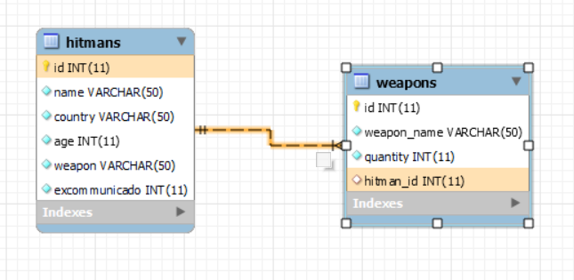
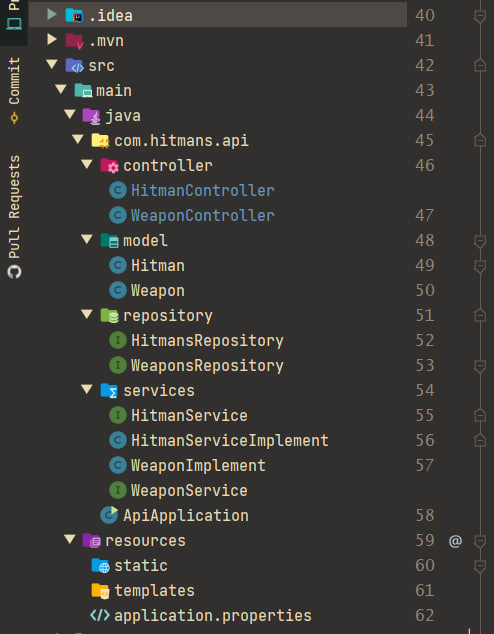
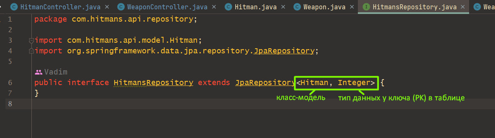
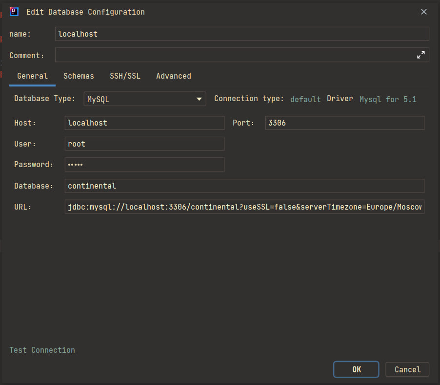
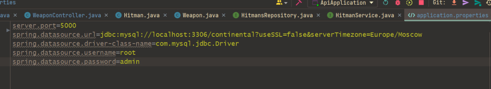
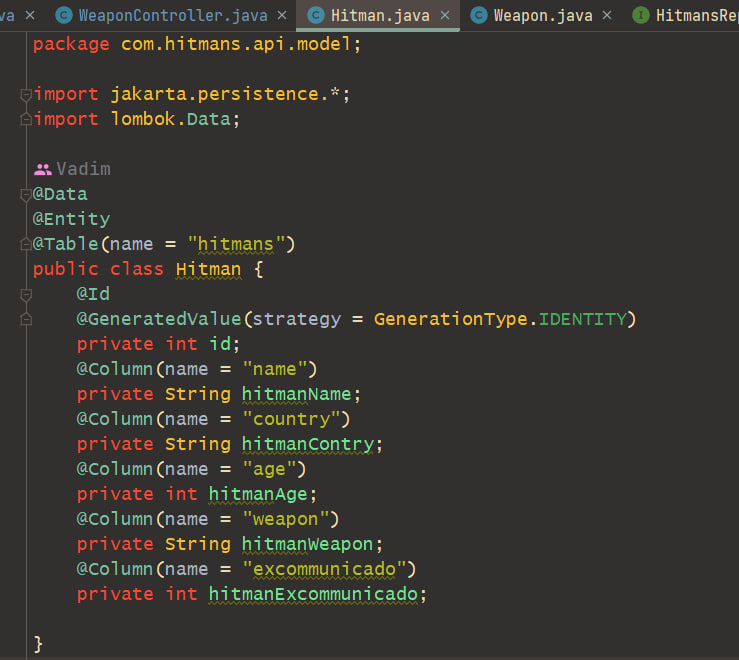
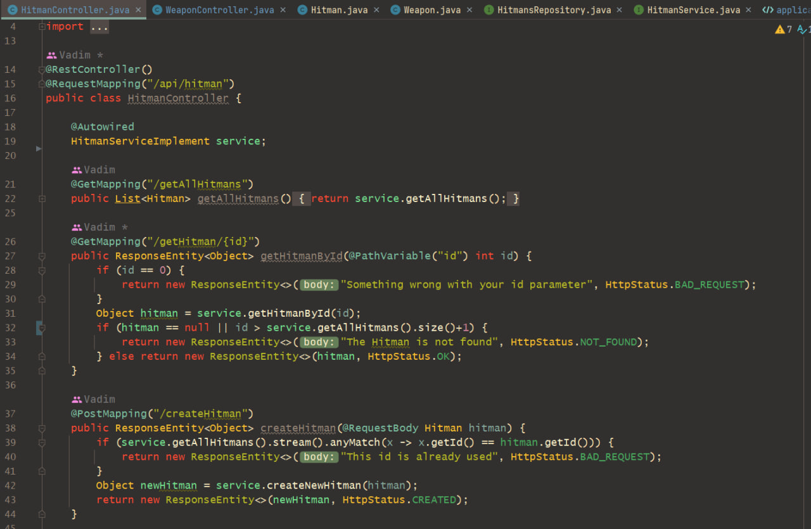

🍃 RESTful Service на Spring 🍃
🎯 Цель: Создать RESTful сервис, организовать CRUD взаимодействие.
💿 Проект доступен по ссылке: RESTful Service Spring.
🌳 Структура базы данных:

📃 Структура проекта:

• Package "Controller" - хранит в себе 2 класса-контроллера. Классы-контроллеры реализуют всю логику CRUD-взаимодействия с сервисом
• Package "Model" - хранит в себе 2 класса-модели. Если сказать просто, то эти классы-модели равны по полям своей таблице в БД (Humans.class = "humans", Weapon.class = "weapons")
• Package "Repository" - хранит в себе 2 интерфейса, которые наследуются от интерфейса JpaRepository. Важный момент на скрине:

Расширяемый интерфейс JpaRepository принимает 2 дженерика, которые нужно указать так же, как на скриншоте.
• Package "Services" - хранит в себе 2 интерфейса и 2 классах-имплементатора. В интерфейсах описаны методы, а в классах эти методы реализуются.
👍 Подключение базы данных к проекту:
Для быстрого подключения базы данных (Таблицы ранее созданы через MySQL Workbench) я использовал плагин Data base Tool Windows

1. Host - это названия хоста на котором создана БД через MySQL Workbench
2. User/Password - это креды, которые используются для подключения к хосту (пункт 1)
3. Database - название БД, которая создана на хосте
4. URL - ссылка на БД, её так же можно найти через MySQL Workbench
Так же необходимо в проекте открыть файл application.properties который находится по пути /src/main/resources/application.properties

То же самое, только текстом:
server.port=5000
spring.datasource.url=jdbc:mysql://localhost:3306/continental?useSSL=false&serverTimezone=Europe/Moscow
spring.datasource.driver-class-name=com.mysql.jdbc.Driver
spring.datasource.username=root
spring.datasource.password=admin
Наш сервис будет располагаться на localhost:5000
🧨 Создание модели БД в классах:
Продемонстрирую на примере класса /model/Hitman.class:

Аннотация @Data - это тема библиотеки Lombok. Благодаря @Data мне не нужно создавать в классе геттеры, сеттеры и конструкторы.
- @Entity - это что-то типо указания сущности, а @Table - это привязка класса-модели к реальной таблице в БД (в данном случае "hitmans")
- Далее идёт интересные аннотации @Id и @GeneratedValue. Тут объявляется поле класса и говорится, что это самосоздаваемый id (по-другому сказать AUTOINCREMENT в БД)
- Далее над каждым полем класса висит аннотация @Column с параметром name. Так вот этот name - это название колонки в таблице hitmans.
Аннотация @Column используется в тех случаях, когда поля класса у Вас названы иначе, чем в таблице. Это важно.
🏹 Порядок создания классов и интерфейсов:
Конкретно в моей реализации всё создавалось вот в таком порядке:
1. Создание БД и таблиц
2. Установка коннекта к проекту + application.properties
3. Создание классов-моделей в пакете models
4. Создание репозиторных классов в пакете repository
5. Создание сервисных классов в пакете service(Примечание: Сервисный класс обязательно помечается аннотацией @Service над объявлением класса)
6. Создание классов-контроллеров в пакете controller
Вот небольшой пример. Класс-контроллер содержит в себе всю логику:

Про аннотации лучше быстренько почитать статейки, а то этот пост растянется и будет не очень удобным. В целом - достаточно просто повторить подменив нейминг и всё заработает.
На моменте завершения создания класса-контроллера я предлагаю закончить моё повествование. Надеюсь эта статья послужит для Вас маленькой шпаргалкой.
Спасибо за внимание!